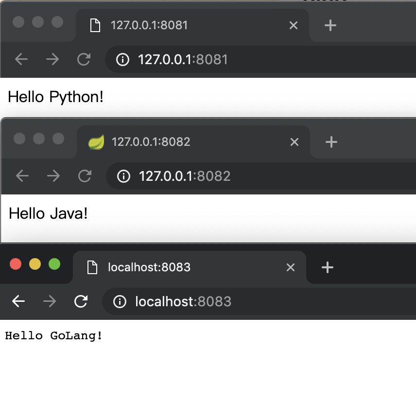

<!DOCTYPE html>
<html lang="zh-Hans">
<head>
  <meta charset="UTF-8">
<meta name="viewport" content="width=device-width, initial-scale=1, maximum-scale=2">
<meta name="theme-color" content="#222">
<meta name="generator" content="Hexo 3.7.1">
  <link rel="apple-touch-icon" sizes="180x180" href="/favicon.ico">
  <link rel="icon" type="image/png" sizes="32x32" href="/favicon.ico">
  <link rel="icon" type="image/png" sizes="16x16" href="/favicon.ico">
  <link rel="mask-icon" href="/favicon.ico" color="#222">

<link rel="stylesheet" href="/css/main.css">


<link rel="stylesheet" href="/lib/font-awesome/css/font-awesome.min.css">

<script id="hexo-configurations">
    var NexT = window.NexT || {};
    var CONFIG = {"hostname":"jiapan.me","root":"/","scheme":"Pisces","version":"7.8.0","exturl":false,"sidebar":{"position":"left","display":"post","padding":18,"offset":12,"onmobile":false},"copycode":{"enable":false,"show_result":false,"style":null},"back2top":{"enable":true,"sidebar":false,"scrollpercent":false},"bookmark":{"enable":false,"color":"#222","save":"auto"},"fancybox":false,"mediumzoom":false,"lazyload":false,"pangu":false,"comments":{"style":"tabs","active":null,"storage":true,"lazyload":false,"nav":null},"algolia":{"hits":{"per_page":10},"labels":{"input_placeholder":"Search for Posts","hits_empty":"We didn't find any results for the search: ${query}","hits_stats":"${hits} results found in ${time} ms"}},"localsearch":{"enable":true,"trigger":"auto","top_n_per_article":1,"unescape":false,"preload":false},"motion":{"enable":true,"async":false,"transition":{"post_block":"fadeIn","post_header":"slideDownIn","post_body":"slideDownIn","coll_header":"slideLeftIn","sidebar":"slideUpIn"}},"path":"search.json"};
  </script>

  <meta name="description" content="最近一段时间学习了一下 Go 这门语言，其中提到最多的就是 GoLang 的高性能 &amp;amp; 高并发，所以本着没有对比就没有伤害的原则，我准备将其与另外两个我所掌握的语言（Python、Java）进行一个简单的性能对比。 测试环境我的 MacBook Pro，12个逻辑CPU + 16G内存 测试工具https://github.com/wg/wrk wrk -t8 -c100 -d30s -">
<meta property="og:type" content="article">
<meta property="og:title" content="Python、Java、GoLang 基于 Web 的性能测试">
<meta property="og:url" content="https://jiapan.me/2019/web-benchmark-for-python-java-golang/index.html">
<meta property="og:site_name" content="贾攀的流水账">
<meta property="og:description" content="最近一段时间学习了一下 Go 这门语言，其中提到最多的就是 GoLang 的高性能 &amp;amp; 高并发，所以本着没有对比就没有伤害的原则，我准备将其与另外两个我所掌握的语言（Python、Java）进行一个简单的性能对比。 测试环境我的 MacBook Pro，12个逻辑CPU + 16G内存 测试工具https://github.com/wg/wrk wrk -t8 -c100 -d30s -">
<meta property="og:locale" content="zh-Hans">
<meta property="og:image" content="https://jiapan.me/2019/web-benchmark-for-python-java-golang/1.png">
<meta property="og:updated_time" content="2026-01-26T05:04:58.865Z">
<meta name="twitter:card" content="summary">
<meta name="twitter:title" content="Python、Java、GoLang 基于 Web 的性能测试">
<meta name="twitter:description" content="最近一段时间学习了一下 Go 这门语言，其中提到最多的就是 GoLang 的高性能 &amp;amp; 高并发，所以本着没有对比就没有伤害的原则，我准备将其与另外两个我所掌握的语言（Python、Java）进行一个简单的性能对比。 测试环境我的 MacBook Pro，12个逻辑CPU + 16G内存 测试工具https://github.com/wg/wrk wrk -t8 -c100 -d30s -">
<meta name="twitter:image" content="https://jiapan.me/2019/web-benchmark-for-python-java-golang/1.png">

<link rel="canonical" href="https://jiapan.me/2019/web-benchmark-for-python-java-golang/">


<script id="page-configurations">
  // https://hexo.io/docs/variables.html
  CONFIG.page = {
    sidebar: "",
    isHome : false,
    isPost : true,
    lang   : 'zh-Hans'
  };
</script>

  <title>Python、Java、GoLang 基于 Web 的性能测试 | 贾攀的流水账</title>
  


  <noscript>
  <style>
  .use-motion .brand,
  .use-motion .menu-item,
  .sidebar-inner,
  .use-motion .post-block,
  .use-motion .pagination,
  .use-motion .comments,
  .use-motion .post-header,
  .use-motion .post-body,
  .use-motion .collection-header { opacity: initial; }

  .use-motion .site-title,
  .use-motion .site-subtitle {
    opacity: initial;
    top: initial;
  }

  .use-motion .logo-line-before i { left: initial; }
  .use-motion .logo-line-after i { right: initial; }
  </style>
</noscript>

  <link rel="stylesheet" href="https://cdn.jsdelivr.net/npm/lxgw-wenkai-lite-webfont@1.0.0/style.css" />
  <style>
    body,div.post-body,h1,h2,h3,h4 {
      font-family: "LXGW WenKai LITE", sans-serif;
      font-size: 108%;
    }
    div.post-body a {
      color: #0070c0;
    }
  </style>
  <script async src="https://pagead2.googlesyndication.com/pagead/js/adsbygoogle.js?client=ca-pub-7771759338768779"
     crossorigin="anonymous"></script>
</head>

<body itemscope itemtype="http://schema.org/WebPage">
  <div class="container use-motion">
    <div class="headband"></div>

    <header class="header" itemscope itemtype="http://schema.org/WPHeader">
      <div class="header-inner"><div class="site-brand-container">
  <div class="site-nav-toggle">
    <div class="toggle" aria-label="Toggle navigation bar">
      <span class="toggle-line toggle-line-first"></span>
      <span class="toggle-line toggle-line-middle"></span>
      <span class="toggle-line toggle-line-last"></span>
    </div>
  </div>

  <div class="site-meta">

    <a href="/" class="brand" rel="start">
      <span class="logo-line-before"><i></i></span>
      <h1 class="site-title">贾攀的流水账</h1>
      <span class="logo-line-after"><i></i></span>
    </a>
      <p class="site-subtitle" itemprop="description">Panmax's Blog</p>
  </div>

  <div class="site-nav-right">
    <div class="toggle popup-trigger">
        <i class="fa fa-search fa-fw fa-lg"></i>
    </div>
  </div>
</div>


<nav class="site-nav">
  <ul id="menu" class="menu">
        <li class="menu-item menu-item-首页">

    <a href="/" rel="section"><i class="fa fa-fw fa-fa fa-home"></i>首页</a>

  </li>
        <li class="menu-item menu-item-文章列表">

    <a href="/archives/" rel="section"><i class="fa fa-fw fa-fa fa-archive"></i>文章列表</a>

  </li>
        <li class="menu-item menu-item-书单">

    <a href="/book-list/" rel="section"><i class="fa fa-fw fa-fa fa-book"></i>书单</a>

  </li>
        <li class="menu-item menu-item-浴室沉思">

    <a href="/think/" rel="section"><i class="fa fa-fw fa-fa fa-shower"></i>浴室沉思</a>

  </li>
        <li class="menu-item menu-item-关于我">

    <a href="/about/" rel="section"><i class="fa fa-fw fa-fa fa-user"></i>关于我</a>

  </li>
      <li class="menu-item menu-item-search">
        <a role="button" class="popup-trigger"><i class="fa fa-search fa-fw"></i>Search
        </a>
      </li>
  </ul>
</nav>


  <div class="search-pop-overlay">
    <div class="popup search-popup">
        <div class="search-header">
  <span class="search-icon">
    <i class="fa fa-search"></i>
  </span>
  <div class="search-input-container">
    <input autocomplete="off" autocapitalize="off"
           placeholder="Searching..." spellcheck="false"
           type="search" class="search-input">
  </div>
  <span class="popup-btn-close">
    <i class="fa fa-times-circle"></i>
  </span>
</div>
<div id="search-result">
  <div id="no-result">
    <i class="fa fa-spinner fa-pulse fa-5x fa-fw"></i>
  </div>
</div>

    </div>
  </div>

</div>
    </header>

    
  <div class="back-to-top">
    <i class="fa fa-arrow-up"></i>
    <span>0%</span>
  </div>


    <main class="main">
      <div class="main-inner">
        <div class="content-wrap">
          

          <div class="content post posts-expand">
            

    
  
  
  <article itemscope itemtype="http://schema.org/Article" class="post-block" lang="zh-Hans">
    <link itemprop="mainEntityOfPage" href="https://jiapan.me/2019/web-benchmark-for-python-java-golang/">

    <span hidden itemprop="author" itemscope itemtype="http://schema.org/Person">
      <meta itemprop="image" content="/IMG_7996.JPG">
      <meta itemprop="name" content="Panmax">
      <meta itemprop="description" content="这里是贾攀叨逼叨的地方">
    </span>

    <span hidden itemprop="publisher" itemscope itemtype="http://schema.org/Organization">
      <meta itemprop="name" content="贾攀的流水账">
    </span>
      <header class="post-header">
        <h1 class="post-title" itemprop="name headline">
          Python、Java、GoLang 基于 Web 的性能测试
        </h1>

        <div class="post-meta">
            <span class="post-meta-item">
              <span class="post-meta-item-icon">
                <i class="fa fa-calendar-o"></i>
              </span>
              <span class="post-meta-item-text">Posted on</span>

              <time title="Created: 2019-04-08 13:47:17" itemprop="dateCreated datePublished" datetime="2019-04-08T13:47:17+08:00">2019-04-08</time>
            </span>

          
  
  <span class="post-meta-item">
    
      <span class="post-meta-item-icon">
        <i class="fa fa-comment-o"></i>
      </span>
      <span class="post-meta-item-text">Valine: </span>
    
    <a title="valine" href="/2019/web-benchmark-for-python-java-golang/#valine-comments" itemprop="discussionUrl">
      <span class="post-comments-count valine-comment-count" data-xid="/2019/web-benchmark-for-python-java-golang/" itemprop="commentCount"></span>
    </a>
  </span>
  
  

        </div>
      </header>

    
    
    
    <div class="post-body" itemprop="articleBody">

      
        <p>最近一段时间学习了一下 Go 这门语言，其中提到最多的就是 GoLang 的高性能 &amp; 高并发，所以本着没有对比就没有伤害的原则，我准备将其与另外两个我所掌握的语言（Python、Java）进行一个简单的性能对比。</p>
<h3 id="测试环境"><a href="#测试环境" class="headerlink" title="测试环境"></a>测试环境</h3><p>我的 MacBook Pro，12个逻辑CPU + 16G内存</p>
<h3 id="测试工具"><a href="#测试工具" class="headerlink" title="测试工具"></a>测试工具</h3><p><a href="https://github.com/wg/wrk" target="_blank" rel="noopener">https://github.com/wg/wrk</a></p>
<p><code>wrk -t8 -c100 -d30s --latency http://www.baidu.com</code></p>
<p>模拟8线程、100个并发，持续30秒的性能测试</p>
<h2 id="实现"><a href="#实现" class="headerlink" title="实现"></a>实现</h2><blockquote>
<p>以下程序完整源码已放在 GitHub：<a href="https://github.com/Panmax/web-benchmark" target="_blank" rel="noopener">https://github.com/Panmax/web-benchmark</a></p>
</blockquote>
<h3 id="Python"><a href="#Python" class="headerlink" title="Python"></a>Python</h3><p>框架：<a href="http://flask.pocoo.org/" target="_blank" rel="noopener">Flask</a><br>容器：Gunicorn<br>运行环境：Docker</p>
<h4 id="核心代码："><a href="#核心代码：" class="headerlink" title="核心代码："></a>核心代码：</h4><figure class="highlight plain"><table><tr><td class="gutter"><pre><span class="line">1</span><br><span class="line">2</span><br><span class="line">3</span><br><span class="line">4</span><br><span class="line">5</span><br><span class="line">6</span><br><span class="line">7</span><br><span class="line">8</span><br><span class="line">9</span><br><span class="line">10</span><br><span class="line">11</span><br></pre></td><td class="code"><pre><span class="line"># -*- coding: utf-8 -*-</span><br><span class="line"></span><br><span class="line">from flask import Flask</span><br><span class="line">app = Flask(__name__)</span><br><span class="line"></span><br><span class="line">@app.route(&quot;/&quot;)</span><br><span class="line">def hello():</span><br><span class="line">    return &quot;Hello Python!&quot;</span><br><span class="line"></span><br><span class="line">if __name__ == &apos;__main__&apos;:</span><br><span class="line">    app.run()</span><br></pre></td></tr></table></figure>
<h4 id="Dockerfile"><a href="#Dockerfile" class="headerlink" title="Dockerfile"></a>Dockerfile</h4><figure class="highlight plain"><table><tr><td class="gutter"><pre><span class="line">1</span><br><span class="line">2</span><br><span class="line">3</span><br><span class="line">4</span><br><span class="line">5</span><br><span class="line">6</span><br><span class="line">7</span><br><span class="line">8</span><br><span class="line">9</span><br><span class="line">10</span><br><span class="line">11</span><br><span class="line">12</span><br><span class="line">13</span><br><span class="line">14</span><br><span class="line">15</span><br><span class="line">16</span><br><span class="line">17</span><br><span class="line">18</span><br><span class="line">19</span><br><span class="line">20</span><br><span class="line">21</span><br><span class="line">22</span><br><span class="line">23</span><br><span class="line">24</span><br><span class="line">25</span><br><span class="line">26</span><br><span class="line">27</span><br><span class="line">28</span><br><span class="line">29</span><br><span class="line">30</span><br><span class="line">31</span><br><span class="line">32</span><br></pre></td><td class="code"><pre><span class="line">FROM ubuntu:14.04</span><br><span class="line"></span><br><span class="line">ADD sources.list /etc/apt/sources.list</span><br><span class="line">ADD pip.conf ~/.pip/pip.conf</span><br><span class="line"></span><br><span class="line"># Update OS</span><br><span class="line"># RUN sed -i &apos;s/# \(.*multiverse$\)/\1/g&apos; /etc/apt/sources.list</span><br><span class="line">RUN apt-get update</span><br><span class="line">RUN apt-get -y upgrade</span><br><span class="line"></span><br><span class="line"># Install Python</span><br><span class="line">RUN apt-get install -y python-dev python-pip</span><br><span class="line"></span><br><span class="line"># Add requirements.txt</span><br><span class="line">ADD requirements.txt /webapp/requirements.txt</span><br><span class="line"></span><br><span class="line"># Install gunicorn Python web server</span><br><span class="line">RUN pip install gunicorn==19.6.0</span><br><span class="line"># Install app requirements</span><br><span class="line">RUN pip install -r /webapp/requirements.txt</span><br><span class="line"></span><br><span class="line"># Create app directory</span><br><span class="line">ADD . /webapp</span><br><span class="line"></span><br><span class="line"># Set the default directory for our environment</span><br><span class="line">ENV HOME /webapp</span><br><span class="line">WORKDIR /webapp</span><br><span class="line"></span><br><span class="line"># Expose port 5000 for gunicorn</span><br><span class="line">EXPOSE 5000</span><br><span class="line"></span><br><span class="line">ENTRYPOINT [&quot;gunicorn&quot;, &quot;-w&quot;, &quot;24&quot;, &quot;wsgi:app&quot;, &quot;-b&quot;, &quot;0.0.0.0:5000&quot;, &quot;-n&quot;, &quot;docker-flask&quot;, &quot;--timeout&quot;, &quot;45&quot;, &quot;--max-requests&quot;, &quot;10000&quot;]</span><br></pre></td></tr></table></figure>
<p><em>这里设置 24 个 worker，因为我的机器有 12 个逻辑CPU</em></p>
<h4 id="启动命令"><a href="#启动命令" class="headerlink" title="启动命令"></a>启动命令</h4><figure class="highlight bash"><table><tr><td class="gutter"><pre><span class="line">1</span><br><span class="line">2</span><br></pre></td><td class="code"><pre><span class="line">docker build -t panmax/docker-flask-benchmark .</span><br><span class="line">docker run -d --name docker-flask-benchmark --restart=always -p 8081:5000 panmax/docker-flask-benchmark</span><br></pre></td></tr></table></figure>
<h3 id="Java"><a href="#Java" class="headerlink" title="Java"></a>Java</h3><p>框架：<a href="https://spring.io/projects/spring-boot" target="_blank" rel="noopener">SpringBoot</a></p>
<p>容器采用 <code>SpringBoot</code> 的默认 <code>tomcat</code> 容器，不进行其他修改。</p>
<h4 id="核心代码"><a href="#核心代码" class="headerlink" title="核心代码"></a>核心代码</h4><figure class="highlight plain"><table><tr><td class="gutter"><pre><span class="line">1</span><br><span class="line">2</span><br><span class="line">3</span><br><span class="line">4</span><br><span class="line">5</span><br><span class="line">6</span><br><span class="line">7</span><br><span class="line">8</span><br><span class="line">9</span><br><span class="line">10</span><br><span class="line">11</span><br><span class="line">12</span><br><span class="line">13</span><br><span class="line">14</span><br><span class="line">15</span><br><span class="line">16</span><br><span class="line">17</span><br><span class="line">18</span><br><span class="line">19</span><br><span class="line">20</span><br><span class="line">21</span><br></pre></td><td class="code"><pre><span class="line">package com.jpanj.benchmark;</span><br><span class="line"></span><br><span class="line">import org.springframework.boot.SpringApplication;</span><br><span class="line">import org.springframework.boot.autoconfigure.SpringBootApplication;</span><br><span class="line">import org.springframework.web.bind.annotation.GetMapping;</span><br><span class="line">import org.springframework.web.bind.annotation.RestController;</span><br><span class="line"></span><br><span class="line">@SpringBootApplication</span><br><span class="line">@RestController</span><br><span class="line">public class BenchmarkApplication &#123;</span><br><span class="line"></span><br><span class="line">	public static void main(String[] args) &#123;</span><br><span class="line">		SpringApplication.run(BenchmarkApplication.class, args);</span><br><span class="line">	&#125;</span><br><span class="line"></span><br><span class="line">	@GetMapping</span><br><span class="line">    public String hello() &#123;</span><br><span class="line">        return &quot;Hello Java!&quot;;</span><br><span class="line">    &#125;</span><br><span class="line"></span><br><span class="line">&#125;</span><br></pre></td></tr></table></figure>
<h4 id="配置文件"><a href="#配置文件" class="headerlink" title="配置文件"></a>配置文件</h4><figure class="highlight plain"><table><tr><td class="gutter"><pre><span class="line">1</span><br><span class="line">2</span><br></pre></td><td class="code"><pre><span class="line">server:</span><br><span class="line">  port: 8082</span><br></pre></td></tr></table></figure>
<h4 id="启动命令-1"><a href="#启动命令-1" class="headerlink" title="启动命令"></a>启动命令</h4><figure class="highlight plain"><table><tr><td class="gutter"><pre><span class="line">1</span><br><span class="line">2</span><br><span class="line">3</span><br><span class="line">4</span><br></pre></td><td class="code"><pre><span class="line">./gradlew build -xtest</span><br><span class="line">cd build/libs</span><br><span class="line"></span><br><span class="line">java -jar benchmark-0.0.1-SNAPSHOT.jar</span><br></pre></td></tr></table></figure>
<h3 id="GoLang"><a href="#GoLang" class="headerlink" title="GoLang"></a>GoLang</h3><p>框架：<a href="https://github.com/gin-gonic/gin" target="_blank" rel="noopener">Gin</a></p>
<p>不需要配置任何容器</p>
<h4 id="核心代码-1"><a href="#核心代码-1" class="headerlink" title="核心代码"></a>核心代码</h4><figure class="highlight plain"><table><tr><td class="gutter"><pre><span class="line">1</span><br><span class="line">2</span><br><span class="line">3</span><br><span class="line">4</span><br><span class="line">5</span><br><span class="line">6</span><br><span class="line">7</span><br><span class="line">8</span><br><span class="line">9</span><br><span class="line">10</span><br><span class="line">11</span><br><span class="line">12</span><br><span class="line">13</span><br><span class="line">14</span><br><span class="line">15</span><br></pre></td><td class="code"><pre><span class="line">package main</span><br><span class="line"></span><br><span class="line">import (</span><br><span class="line">	&quot;github.com/gin-gonic/gin&quot;</span><br><span class="line">	&quot;net/http&quot;</span><br><span class="line">)</span><br><span class="line"></span><br><span class="line">func main() &#123;</span><br><span class="line">	router := gin.Default()</span><br><span class="line">	router.GET(&quot;&quot;, func(c *gin.Context) &#123;</span><br><span class="line"></span><br><span class="line">		c.String(http.StatusOK, &quot;Hello GoLang!&quot;)</span><br><span class="line">	&#125;)</span><br><span class="line">	router.Run(&quot;:8083&quot;)</span><br><span class="line">&#125;</span><br></pre></td></tr></table></figure>
<h4 id="启动命令-2"><a href="#启动命令-2" class="headerlink" title="启动命令"></a>启动命令</h4><figure class="highlight plain"><table><tr><td class="gutter"><pre><span class="line">1</span><br><span class="line">2</span><br></pre></td><td class="code"><pre><span class="line">go build .</span><br><span class="line">./gin-benchmark</span><br></pre></td></tr></table></figure>
<p><em>go build 可以直接编译出一个可以执行文件，这个二进制文件可以直接放在其他机器上无需安装任何环境就可以运行起来，甚至可以在 Mac 上编译 Linux / Windows 的可执行文件，在 Linux 上编译 Mac / Windows 的可执行文件，这个特性非常爽。</em></p>
<hr>
<p>通过浏览器可以验证以上使用 3 种语言开发的简单 Web 程序已经启起来了：</p>
<p></p>
<h3 id="接下来我们逐个进行性能测试："><a href="#接下来我们逐个进行性能测试：" class="headerlink" title="接下来我们逐个进行性能测试："></a>接下来我们逐个进行性能测试：</h3><h4 id="Python-1"><a href="#Python-1" class="headerlink" title="Python"></a>Python</h4><figure class="highlight plain"><table><tr><td class="gutter"><pre><span class="line">1</span><br><span class="line">2</span><br><span class="line">3</span><br><span class="line">4</span><br><span class="line">5</span><br><span class="line">6</span><br><span class="line">7</span><br><span class="line">8</span><br><span class="line">9</span><br><span class="line">10</span><br><span class="line">11</span><br><span class="line">12</span><br><span class="line">13</span><br><span class="line">14</span><br><span class="line">15</span><br></pre></td><td class="code"><pre><span class="line">➜ wrk -t8 -c100 -d30s --latency http://127.0.0.1:8081/</span><br><span class="line">Running 30s test @ http://127.0.0.1:8081/</span><br><span class="line">  8 threads and 100 connections</span><br><span class="line">  Thread Stats   Avg      Stdev     Max   +/- Stdev</span><br><span class="line">    Latency    21.45ms   12.75ms 237.13ms   85.43%</span><br><span class="line">    Req/Sec   332.10    111.19   640.00     71.40%</span><br><span class="line">  Latency Distribution</span><br><span class="line">     50%   19.20ms</span><br><span class="line">     75%   26.01ms</span><br><span class="line">     90%   33.23ms</span><br><span class="line">     99%   90.03ms</span><br><span class="line">  15917 requests in 30.08s, 2.63MB read</span><br><span class="line">  Socket errors: connect 0, read 560, write 0, timeout 0</span><br><span class="line">Requests/sec:    529.21</span><br><span class="line">Transfer/sec:     89.41KB</span><br></pre></td></tr></table></figure>
<h4 id="Java-1"><a href="#Java-1" class="headerlink" title="Java"></a>Java</h4><figure class="highlight plain"><table><tr><td class="gutter"><pre><span class="line">1</span><br><span class="line">2</span><br><span class="line">3</span><br><span class="line">4</span><br><span class="line">5</span><br><span class="line">6</span><br><span class="line">7</span><br><span class="line">8</span><br><span class="line">9</span><br><span class="line">10</span><br><span class="line">11</span><br><span class="line">12</span><br><span class="line">13</span><br><span class="line">14</span><br></pre></td><td class="code"><pre><span class="line">➜ wrk -t8 -c100 -d30s --latency http://127.0.0.1:8082/</span><br><span class="line">Running 30s test @ http://127.0.0.1:8082/</span><br><span class="line">  8 threads and 100 connections</span><br><span class="line">  Thread Stats   Avg      Stdev     Max   +/- Stdev</span><br><span class="line">    Latency     8.22ms   26.99ms 438.58ms   93.31%</span><br><span class="line">    Req/Sec     6.93k     3.00k   16.38k    50.11%</span><br><span class="line">  Latency Distribution</span><br><span class="line">     50%    1.26ms</span><br><span class="line">     75%    2.09ms</span><br><span class="line">     90%   12.81ms</span><br><span class="line">     99%  132.29ms</span><br><span class="line">  1631200 requests in 30.06s, 194.75MB read</span><br><span class="line">Requests/sec:  54256.97</span><br><span class="line">Transfer/sec:      6.48MB</span><br></pre></td></tr></table></figure>
<h4 id="GoLang-1"><a href="#GoLang-1" class="headerlink" title="GoLang"></a>GoLang</h4><figure class="highlight plain"><table><tr><td class="gutter"><pre><span class="line">1</span><br><span class="line">2</span><br><span class="line">3</span><br><span class="line">4</span><br><span class="line">5</span><br><span class="line">6</span><br><span class="line">7</span><br><span class="line">8</span><br><span class="line">9</span><br><span class="line">10</span><br><span class="line">11</span><br><span class="line">12</span><br><span class="line">13</span><br><span class="line">14</span><br></pre></td><td class="code"><pre><span class="line">➜ wrk -t8 -c100 -d30s --latency http://127.0.0.1:8083/</span><br><span class="line">Running 30s test @ http://127.0.0.1:8083/</span><br><span class="line">  8 threads and 100 connections</span><br><span class="line">  Thread Stats   Avg      Stdev     Max   +/- Stdev</span><br><span class="line">    Latency     1.80ms    1.95ms  24.69ms   85.85%</span><br><span class="line">    Req/Sec     8.68k   786.97    11.03k    65.72%</span><br><span class="line">  Latency Distribution</span><br><span class="line">     50%    1.36ms</span><br><span class="line">     75%    2.68ms</span><br><span class="line">     90%    4.32ms</span><br><span class="line">     99%    8.42ms</span><br><span class="line">  2078830 requests in 30.10s, 257.73MB read</span><br><span class="line">Requests/sec:  69064.35</span><br><span class="line">Transfer/sec:      8.56MB</span><br></pre></td></tr></table></figure>
<hr>
<p>可以看到，在每秒请求数量（Requests/sec），也就是并发能力方面，测试结果为：</p>
<ul>
<li>Python: <strong>529.21</strong></li>
<li>Java: <strong>54256.97</strong></li>
<li>GoLang: <strong>69064.35</strong></li>
</ul>
<p>线程平均延迟（Thread Stats - Avg - Latency）的测试结果为：</p>
<ul>
<li>Python: <strong>21.45ms</strong></li>
<li>Java: <strong>8.22ms</strong></li>
<li>GoLang: <strong>1.80ms</strong></li>
</ul>
<p>可以看出，Go 在性能方面甩出 Python 几十条街是没有问题的，比 Java 的性能确实也好很多。</p>
<blockquote>
<p>最后说明一下，这个测试可能存在不严谨性，但是我所采用的部署方案是大部分公司或者程序员最常使用的方式，也能在一定程度上说明问题。</p>
</blockquote>

    </div>

    
    
    

      <footer class="post-footer">

        


        
    <div class="post-nav">
      <div class="post-nav-item">
    <a href="/2019/common-use-commands/" rel="prev" title="常用命令记录">
      <i class="fa fa-chevron-left"></i> 常用命令记录
    </a></div>
      <div class="post-nav-item">
    <a href="/2019/install-node-and-npm-on-linux/" rel="next" title="Linux 安装 node 和 npm">
      Linux 安装 node 和 npm <i class="fa fa-chevron-right"></i>
    </a></div>
    </div>
      </footer>
    
  </article>
  
  
  


          </div>
          
    <div class="comments" id="valine-comments"></div>

<script>
  window.addEventListener('tabs:register', () => {
    let { activeClass } = CONFIG.comments;
    if (CONFIG.comments.storage) {
      activeClass = localStorage.getItem('comments_active') || activeClass;
    }
    if (activeClass) {
      let activeTab = document.querySelector(`a[href="#comment-${activeClass}"]`);
      if (activeTab) {
        activeTab.click();
      }
    }
  });
  if (CONFIG.comments.storage) {
    window.addEventListener('tabs:click', event => {
      if (!event.target.matches('.tabs-comment .tab-content .tab-pane')) return;
      let commentClass = event.target.classList[1];
      localStorage.setItem('comments_active', commentClass);
    });
  }
</script>

        </div>
          
  
  <div class="toggle sidebar-toggle">
    <span class="toggle-line toggle-line-first"></span>
    <span class="toggle-line toggle-line-middle"></span>
    <span class="toggle-line toggle-line-last"></span>
  </div>

  <aside class="sidebar">
    <div class="sidebar-inner">

      <ul class="sidebar-nav motion-element">
        <li class="sidebar-nav-toc">
          Table of Contents
        </li>
        <li class="sidebar-nav-overview">
          Overview
        </li>
      </ul>

      <!--noindex-->
      <div class="post-toc-wrap sidebar-panel">
          <div class="post-toc motion-element"><ol class="nav"><li class="nav-item nav-level-3"><a class="nav-link" href="#测试环境"><span class="nav-number">1.</span> <span class="nav-text">测试环境</span></a></li><li class="nav-item nav-level-3"><a class="nav-link" href="#测试工具"><span class="nav-number">2.</span> <span class="nav-text">测试工具</span></a></li></ol></li><li class="nav-item nav-level-2"><a class="nav-link" href="#实现"><span class="nav-number"></span> <span class="nav-text">实现</span></a><ol class="nav-child"><li class="nav-item nav-level-3"><a class="nav-link" href="#Python"><span class="nav-number">1.</span> <span class="nav-text">Python</span></a><ol class="nav-child"><li class="nav-item nav-level-4"><a class="nav-link" href="#核心代码："><span class="nav-number">1.1.</span> <span class="nav-text">核心代码：</span></a></li><li class="nav-item nav-level-4"><a class="nav-link" href="#Dockerfile"><span class="nav-number">1.2.</span> <span class="nav-text">Dockerfile</span></a></li><li class="nav-item nav-level-4"><a class="nav-link" href="#启动命令"><span class="nav-number">1.3.</span> <span class="nav-text">启动命令</span></a></li></ol></li><li class="nav-item nav-level-3"><a class="nav-link" href="#Java"><span class="nav-number">2.</span> <span class="nav-text">Java</span></a><ol class="nav-child"><li class="nav-item nav-level-4"><a class="nav-link" href="#核心代码"><span class="nav-number">2.1.</span> <span class="nav-text">核心代码</span></a></li><li class="nav-item nav-level-4"><a class="nav-link" href="#配置文件"><span class="nav-number">2.2.</span> <span class="nav-text">配置文件</span></a></li><li class="nav-item nav-level-4"><a class="nav-link" href="#启动命令-1"><span class="nav-number">2.3.</span> <span class="nav-text">启动命令</span></a></li></ol></li><li class="nav-item nav-level-3"><a class="nav-link" href="#GoLang"><span class="nav-number">3.</span> <span class="nav-text">GoLang</span></a><ol class="nav-child"><li class="nav-item nav-level-4"><a class="nav-link" href="#核心代码-1"><span class="nav-number">3.1.</span> <span class="nav-text">核心代码</span></a></li><li class="nav-item nav-level-4"><a class="nav-link" href="#启动命令-2"><span class="nav-number">3.2.</span> <span class="nav-text">启动命令</span></a></li></ol></li><li class="nav-item nav-level-3"><a class="nav-link" href="#接下来我们逐个进行性能测试："><span class="nav-number">4.</span> <span class="nav-text">接下来我们逐个进行性能测试：</span></a><ol class="nav-child"><li class="nav-item nav-level-4"><a class="nav-link" href="#Python-1"><span class="nav-number">4.1.</span> <span class="nav-text">Python</span></a></li><li class="nav-item nav-level-4"><a class="nav-link" href="#Java-1"><span class="nav-number">4.2.</span> <span class="nav-text">Java</span></a></li><li class="nav-item nav-level-4"><a class="nav-link" href="#GoLang-1"><span class="nav-number">4.3.</span> <span class="nav-text">GoLang</span></a></li></ol></li></ol></div>
      </div>
      <!--/noindex-->

      <div class="site-overview-wrap sidebar-panel">
        <div class="site-author motion-element" itemprop="author" itemscope itemtype="http://schema.org/Person">
    
  <p class="site-author-name" itemprop="name">Panmax</p>
  <div class="site-description" itemprop="description">这里是贾攀叨逼叨的地方</div>
</div>
<div class="site-state-wrap motion-element">
  <nav class="site-state">
      <div class="site-state-item site-state-posts">
          <a href="/archives">
          <span class="site-state-item-count">365</span>
          <span class="site-state-item-name">posts</span>
        </a>
      </div>
      <div class="site-state-item site-state-categories">
            <a href="/categories/">
        <span class="site-state-item-count">19</span>
        <span class="site-state-item-name">categories</span></a>
      </div>
      <div class="site-state-item site-state-tags">
            <a href="/tags/">
        <span class="site-state-item-count">612</span>
        <span class="site-state-item-name">tags</span></a>
      </div>
  </nav>
</div>
  <div class="links-of-author motion-element">
      <span class="links-of-author-item">
        <a href="https://github.com/Panmax" title="GitHub → https://github.com/Panmax" rel="noopener" target="_blank"><i class="fa fa-fw fa-fab fa-github"></i>GitHub</a>
      </span>
      <span class="links-of-author-item">
        <a href="mailto:hi@jiapan.me" title="E-Mail → mailto:hi@jiapan.me"><i class="fa fa-fw fa-fa-solid fa-message"></i>E-Mail</a>
      </span>
  </div>


      </div>

    </div>
  </aside>
  <div id="sidebar-dimmer"></div>


      </div>
    </main>

    <footer class="footer">
      <div class="footer-inner">
        

        

<div class="copyright">
  
  &copy; 
  <span itemprop="copyrightYear">2026</span>
  <span class="with-love">
    <i class="fa fa-heart"></i>
  </span>
  <span class="author" itemprop="copyrightHolder">Panmax</span>
</div>
  <div class="powered-by">Powered by <a href="https://hexo.io" class="theme-link" rel="noopener" target="_blank">Hexo</a> & <a href="https://pisces.theme-next.org" class="theme-link" rel="noopener" target="_blank">NexT.Pisces</a>
  </div>

        


      </div>
    </footer>
  </div>

  
  <script src="/lib/anime.min.js"></script>
  <script src="/lib/velocity/velocity.min.js"></script>
  <script src="/lib/velocity/velocity.ui.min.js"></script>
<script src="/js/utils.js"></script><script src="/js/motion.js"></script>
<script src="/js/schemes/pisces.js"></script>
<script src="/js/next-boot.js"></script>


  


  <script src="/js/local-search.js"></script>


  

  


<script>
NexT.utils.loadComments(document.querySelector('#valine-comments'), () => {
  NexT.utils.getScript('//cdnjs.cloudflare.com/ajax/libs/valine/1.4.7/Valine.min.js', () => {
    var GUEST = ['nick', 'mail', 'link'];
    var guest = 'nick,mail,link';
    guest = guest.split(',').filter(item => {
      return GUEST.includes(item);
    });
    new Valine({
      el         : '#valine-comments',
      verify     : false,
      notify     : false,
      appId      : 'CMfMXmAsBoMjzg16o7yQ0EHx-MdYXbMMI',
      appKey     : 'KGEPyyfw70fPsobg9kwOmRgm',
      placeholder: "我也爱你...",
      avatar     : 'mp',
      meta       : guest,
      pageSize   : '10' || 10,
      visitor    : false,
      lang       : 'zh-cn' || 'zh-cn',
      path       : location.pathname,
      recordIP   : true,
      serverURLs : 'https://cmfmxmas.api.lncldglobal.com'
    });
  }, window.Valine);
});
</script>

</body>
</html>
